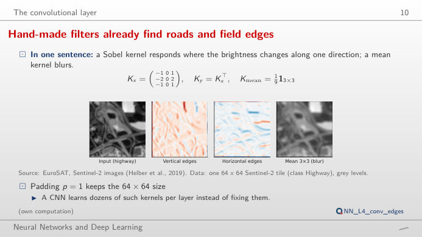
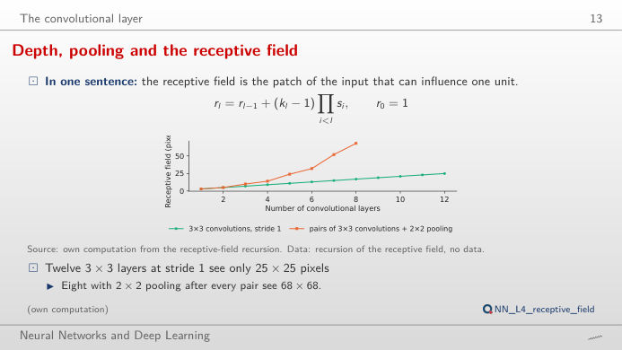
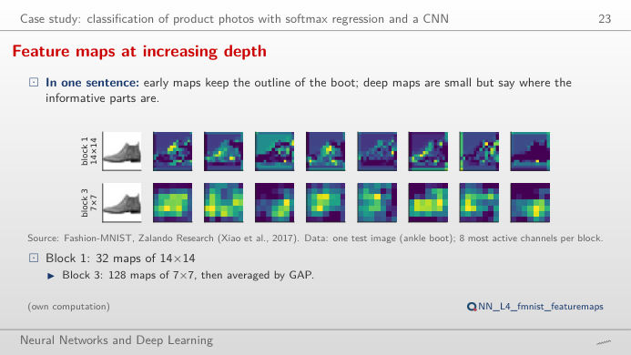
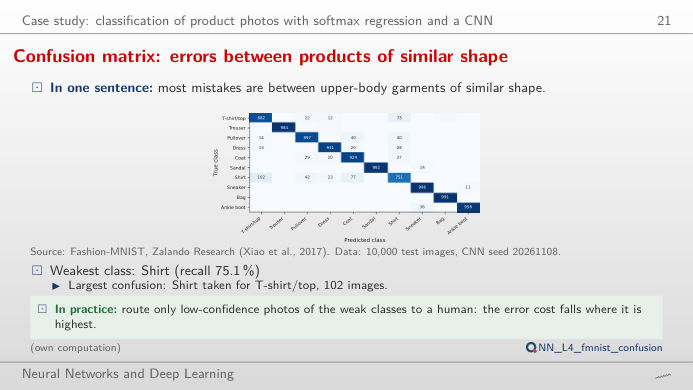
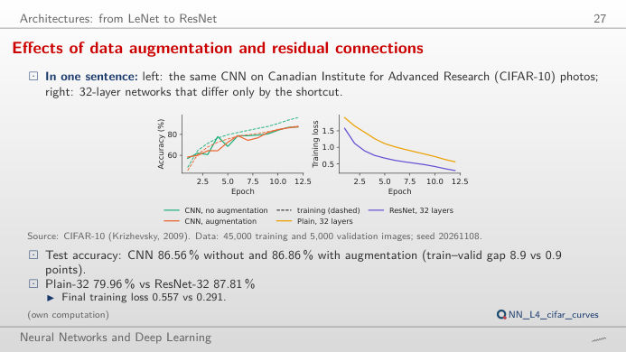
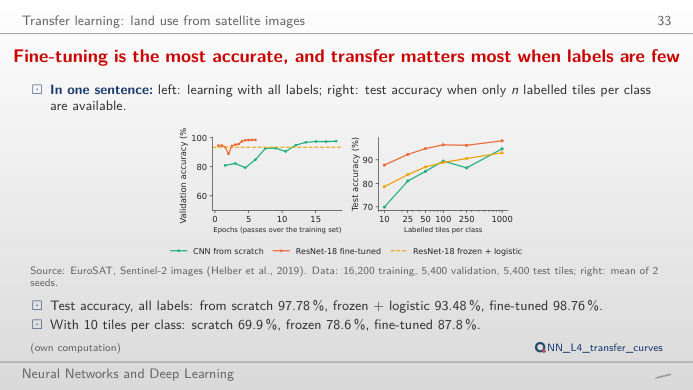

The slide of the lecture is on the left, the same figure on the right, recomputed in your browser when you move a control. The ▶ button moves the main parameter step by step. Under each figure: a readout, a question for the room and the Quantlet with the code of the chart. The first block runs a convolution live on a real satellite image; the feature maps come from the CNN trained in the lecture; the curves are its saved training runs.
The convolutional layer · Product photos: features learned by a CNN · Deeper networks and transfer learning
The convolutional layer
Hand-made filters already find roads and field edges

Answer
Nine weights and one bias, whatever the size of the image (a dense layer from 4,096 pixels to 4,096 outputs would need about 16.8 million weights). With zero padding the output keeps 64 × 64 pixels; without it, (64 − 3)/1 + 1 = 62; with stride 2, (64 + 2 − 3)/2 + 1 = 32 (integer part). The vertical Sobel filter computes a left-minus-right difference: large positive or negative values where brightness changes from left to right, as on the edges of the highway, and zero on uniform fields. Switch to the river or the residential tile: the same filter finds other edges.
Depth, pooling and the receptive field

Answer
Without pooling the receptive field grows by 2 pixels per layer: 13 pixels after 6 layers, 25 after 12, so about 32 layers would be needed. With 2 × 2 pooling after every two convolutions it grows geometrically: 68 pixels after 8 convolutions, more than the whole tile. Larger kernels (5 × 5, 7 × 7) grow it faster but cost 25 or 49 weights per channel pair instead of 9; stacking small kernels with pooling is the cheaper way to see far.
Product photos: features learned by a CNN
Feature maps at increasing depth

Answer
The CNN gives "T-shirt/top" 69.7% for this shirt: the most frequent error of the network, 102 of the 1,000 test shirts go to T-shirt/top and the recall of the class is 75.1%. Block 1 channels (14 × 14) still look like the image: edges, collars, the background. Block 3 channels (7 × 7) are coarse and respond to parts of the object; their average over the map is what the classifier reads. For the other nine test images the CNN is almost certain (99.8% or more).
Confusion matrix: errors between products of similar shape

Answer
Shirt is the hardest class for all three models: recall 56.9% for the softmax regression, 68.2% for the MLP (multilayer perceptron) and 75.1% for the CNN; the largest confusion is always shirt → T-shirt/top (138, 124 and 102 images). Accuracy rises from 84.6% (7,850 parameters) to 89.0% (235,146) and 92.9% (140,778): the CNN has fewer parameters than the MLP and makes 37% fewer errors, because it shares weights across positions. The remaining errors are between visually similar classes (shirt, T-shirt, pullover, coat).
Deeper networks and transfer learning
Effects of data augmentation and residual connections

Answer
This is the degradation problem: after 12 epochs the plain network still has a training loss of 0.557 and 80.0% test accuracy, while the residual one reaches 0.291 and 87.8%. The deeper plain network is not overfitting (its training accuracy is low too); it is hard to optimise. Skip connections let each block learn a correction to the identity and let the gradient flow back unchanged. The small CNN shows the other problem: without augmentation the training accuracy reaches 96.1% against 87.2% on validation; with augmentation the gap falls to 0.9 points.
Fine-tuning is the most accurate, and transfer matters most when labels are few

Answer
A CNN trained from scratch reaches 69.9% test accuracy (mean of 2 seeds), a frozen ResNet-18 with a logistic regression on its features 78.6%, and a fine-tuned ResNet-18 87.8%. The gap closes as labels grow: with 1,000 tiles per class the three reach 94.7%, 93.0% and 98.1%, and with the full 16,200 training tiles 97.8%, 93.5% and 98.8%. Features learned on ImageNet photographs carry over to satellite images; they matter most when labels are scarce. The dip of the scratch CNN at 250 tiles (86.6% after 89.5% at 100) shows the noise of two seeds.
Data: EuroSAT (Sentinel-2 satellite tiles of 64 × 64 pixels, 10 m per pixel, 10 land-use classes; Helber et al., 2019), Fashion-MNIST (Zalando, 28 × 28 grey product photos; 10,000 test images), CIFAR-10 (32 × 32 colour photographs). Networks and seeds (20261108) as in the lecture (analysis_L4.py); ResNet-18 = residual network with 18 layers, pre-trained on ImageNet; MLP = multilayer perceptron; ReLU = rectified linear unit.